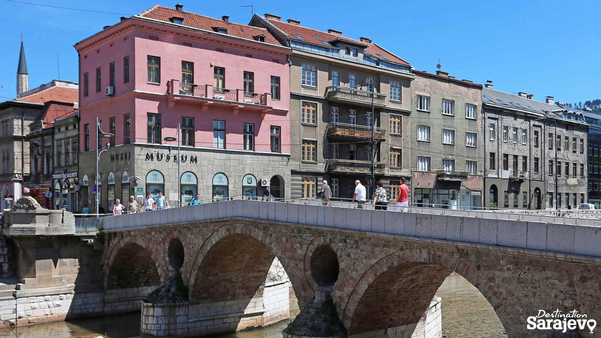
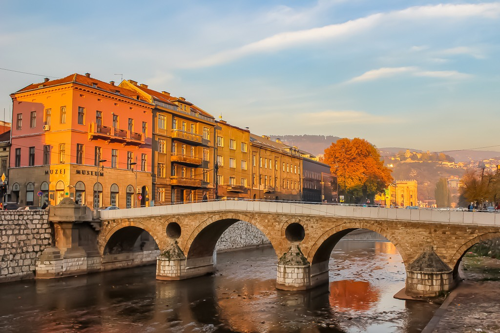
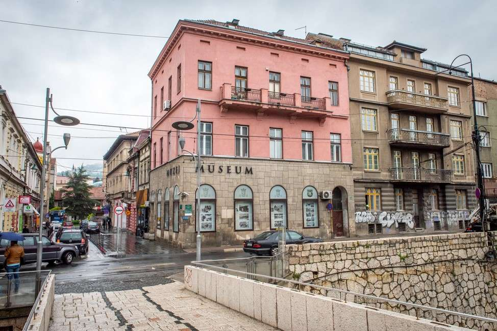
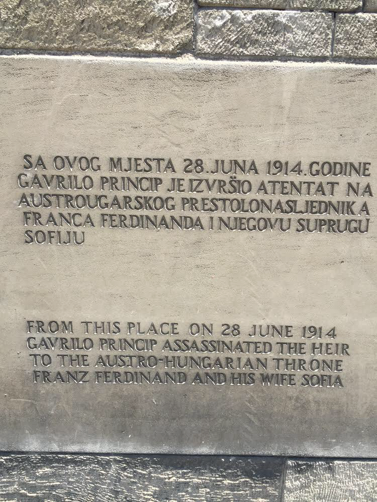
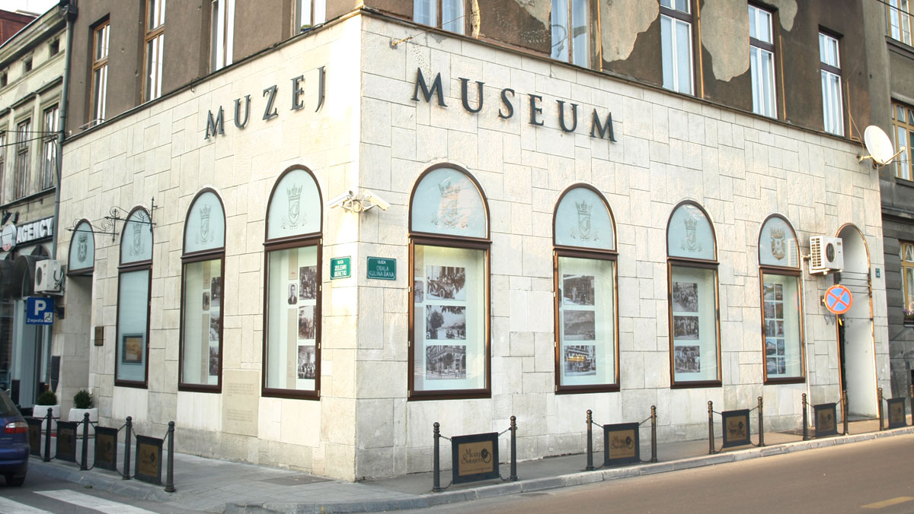
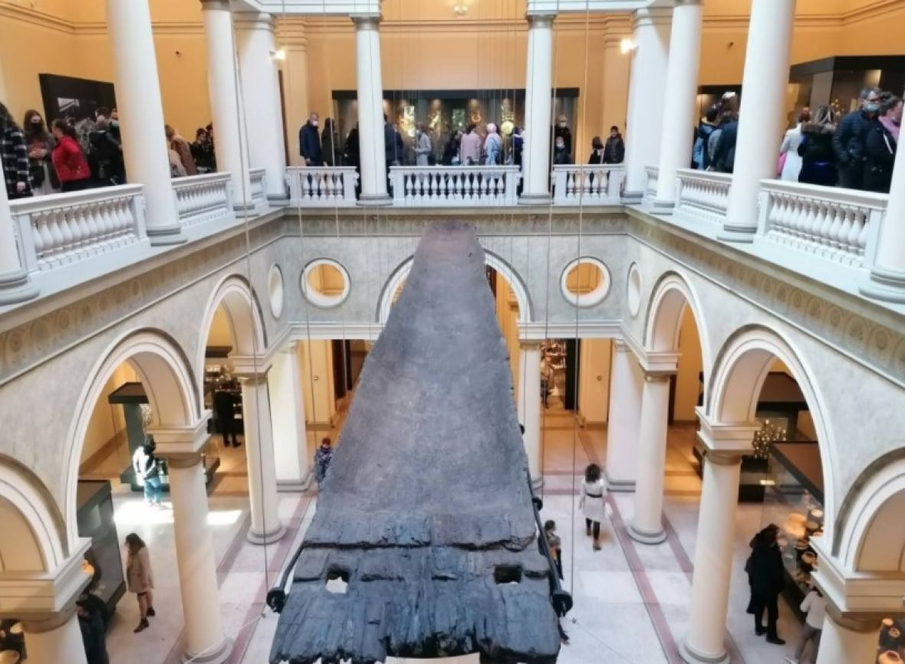
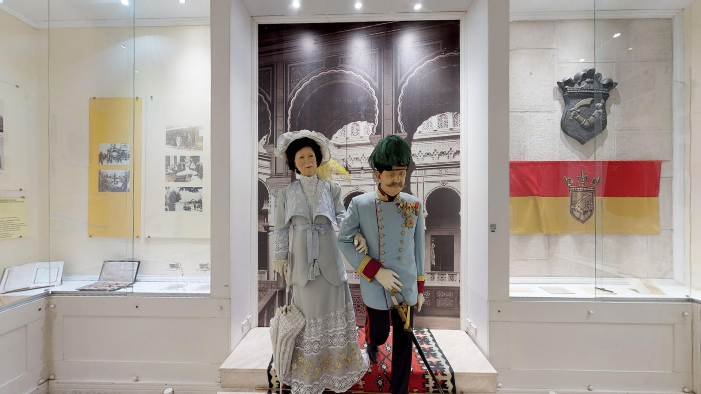

Latinska ćuprija (Principov most)
Latinska ćuprija (od 1918-1992 Principov most) je sarajevski most iz osmanlijskog perioda i dans je jedan od najstarijih mostova u Sarajevu.Prvi pomen mosta na mjestu današnje Latinske ćuprije pronađen je u defteru (popisu) iz 1541. godine, gdje se navodi kako je most podigao sarač Husein.
Iz jednog kasnijeg dokumenta može se zaključiti kako se radilo o drvenom mostu, koji je ubrzo porušen i umjesto kojeg je sarajevski ajan Ali Ajni-Beg izgradio kamenu ćupriju. Taj kameni most je 1791. oštetila poplava, nakon čega je 1798. godine, iz sredstava koje u dobrotvorne svrhe izdvaja ugledni sarajevski trgovac Hadži Abdulah Briga, Latinska ćuprija izgrađena je u svojoj današnjoj formi. Smatra se da je most imao četiri stuba na kojima je ležalo pet lukova, ali regulacijom Miljacke u 19. vijeku jedan stub biva zazidan, a ćuprija ostaje sa četiri luka. U doba Austro-Ugarske mostu su dodani konzolni trotoari. Građen je od sedre i krečnjaka.
 Poslije Prvog svjetskog rata, pa do rata u Bosni i Hercegovini, tačnije od 1918. do 1993. godine Latinska ćuprija zvala se Principov most, po mladiću koji je svega nekoliko metara od ovog mosta izvršio atentat na Franza Ferdinanda i njegovu suprugu Sofiju, Gavrilu Principu, i koji se uzima kao povod Prvog svjetskog rata. Tim povodom je na mostu podignut spomenik, koji je porušen 1918. Dijelovi spomenika se čuvaju u muzeju.
Muzej "Sarajevo 1878–1918."
Muzej "Sarajevo 1878–1918." muzej je čija stalna postavka prikazuje Sarajevo u vrijeme austro-ugarske uprave. Smješten je u zgradi nekadašnje Schillerove radnje na uglu Obale Kulina bana, pred kojom se 28. juna 1914. dogodio Sarajevski atentat.
Zbirka Muzeja postavljena je hronološki. Priča počinje sa događajima koji su prethodili tome da Austro-Ugarska monarhija na Berlinskom kongresu dobije mandat za okupaciju Bosne i Hercegovine, a završava sa Prvim svjetskim ratom, za čije je izbijanje povod bio upravo Sarajevski atentat.
Postavka Muzeja podijeljena je u osam sekcija: Otpor okupaciji; Nova administrativna uprava; Kultura življenja; Kulturna i vjersko - prosvjetna društva, štamparije i izdavaštvo; Industrija i arhitektura; Aneksija i Bosanski sabor; Atentat na prijestolonasljednika Franza Ferdinanda i njegovu suprugu Sofiju, te Prvi svjetski rat. Među najzanimljivijim eksponatima ovog Muzeja su lutke Franza Ferdinanda i Sofije u prirodnim veličinama.